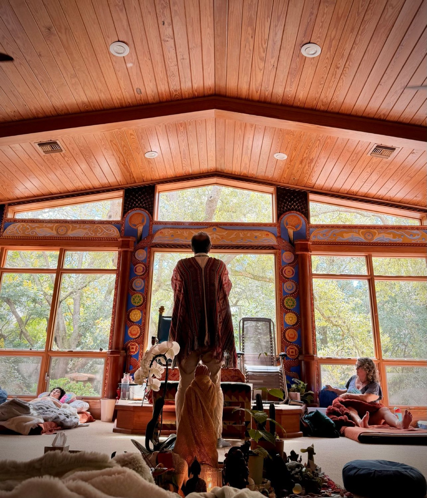
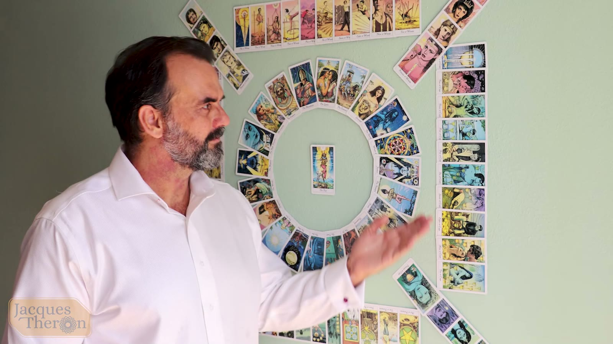
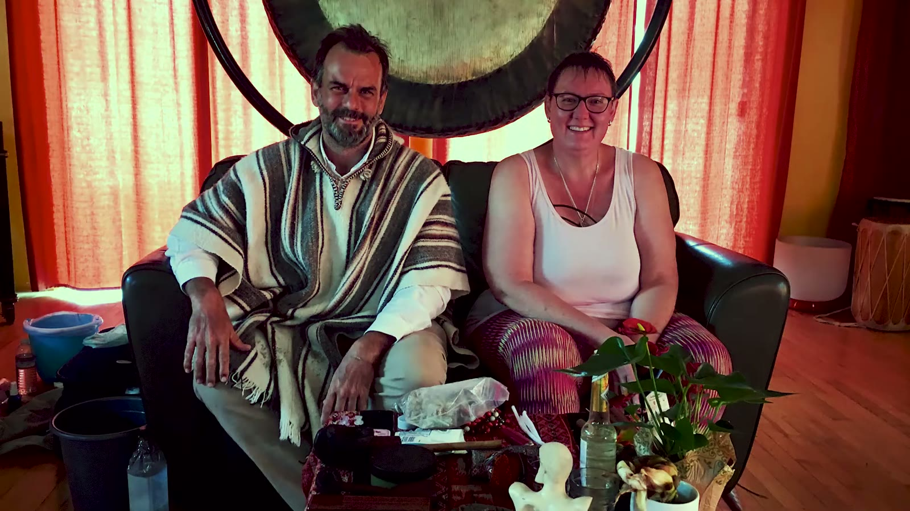
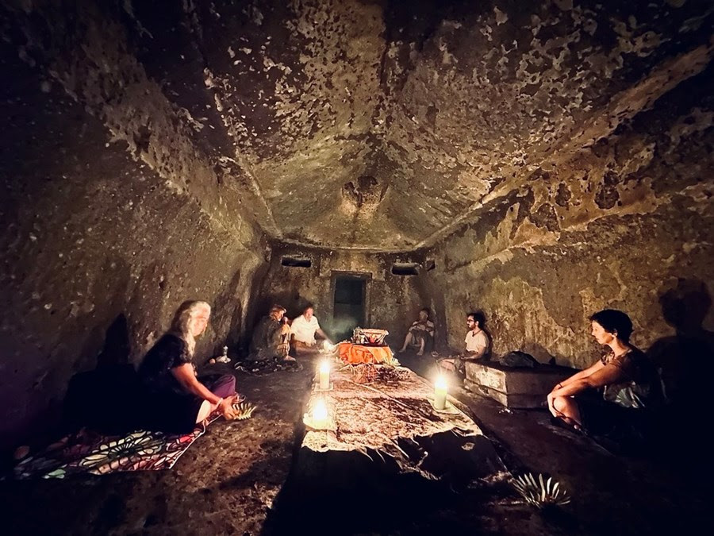
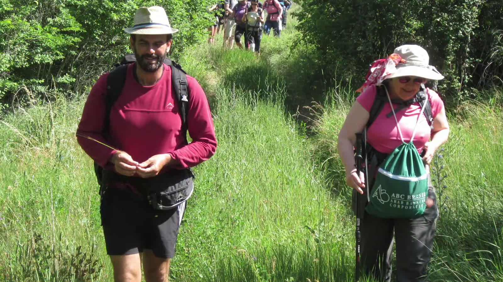
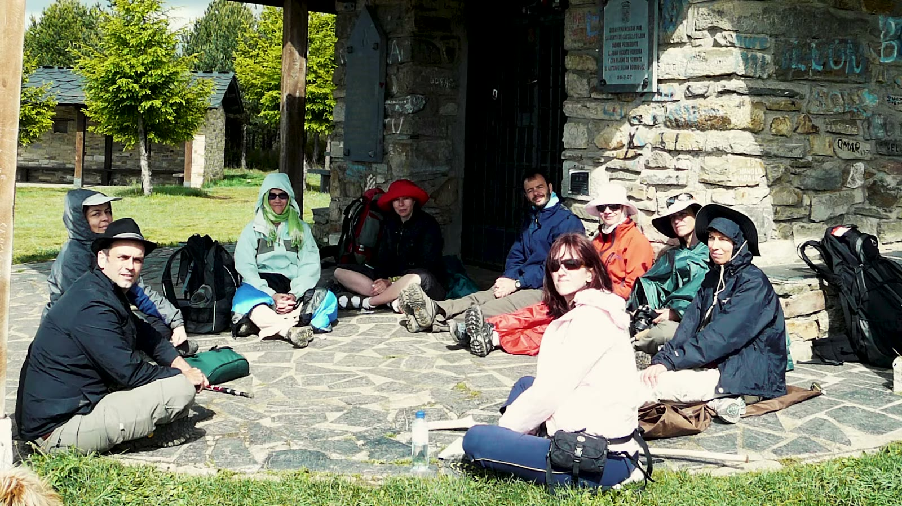
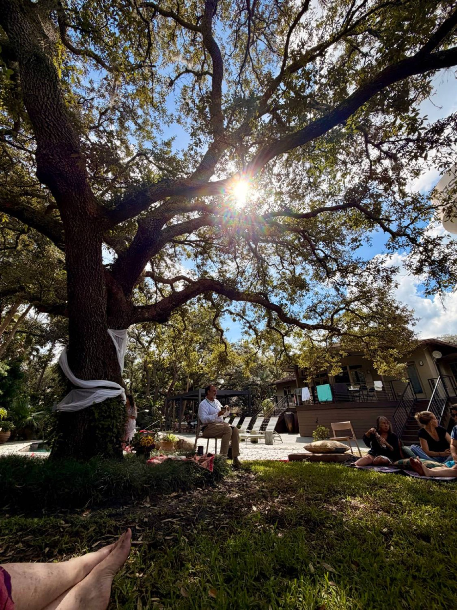
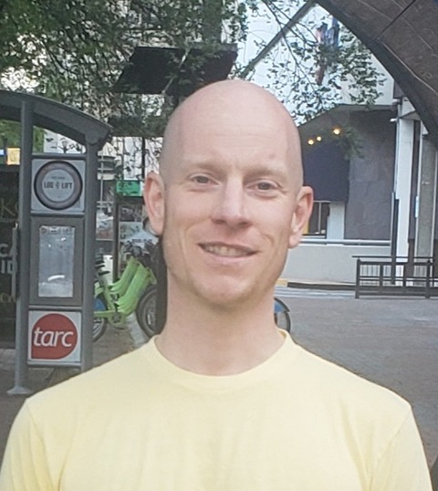

Conscious Breathwork
Simple, safe and very powerful — one of the most effective ways to access relaxation, healing, inspiration and higher purpose.
Explore breathwork →Breathwork · Shamanic Practice · Mythology
Raising our frequency and opening to miracles daily — one breath, one step at a time.
Welcome
Constant and conscious growth keeps us anchored in the present moment, so that old decisions and traumas may be cleared — making it possible to steer ourselves toward the life we desire.
Transformation can be messy and it takes some effort. At times it may be gut-wrenching in its intensity; yet the process always eventually brings us to a haven of healing, wisdom and inspiration that makes all the work worthwhile.
The path of transformation is walked one step at a time. Showing up regularly brings results. It is — and can be — that simple.

Simple, safe and very powerful — one of the most effective ways to access relaxation, healing, inspiration and higher purpose.
Explore breathwork →Non-ordinary states of consciousness allow a direct experience of the Divine in our body, being and world.
Ceremonies & retreats →The gods and goddesses of mythology are psycho-spiritual powerhouses. We can tap into their energy for guidance and growth.
Draw a card →Try it now
Conscious breathwork simply involves changing how you breathe. Choose a rhythm, press begin, and let the circle guide you. Even a minute brings you back into the body.
A gentle taste only. Deeper breathwork is best experienced with a trained facilitator — if you feel dizzy, simply return to your natural breath.
Breathwork
All cultures have found ways to non-ordinary states — meditation, ritual dance, chanting, medicine plants and, of course, conscious breathwork. The breath is a tool for transformation available to everyone, at all times: on spiritual retreat, or while washing the dishes.
The life-force carried on your breath knows what to do to viscerally transform your body and inner being. When you practice, your life can't not change.
Breathwork accelerates manifestation because it brings you back to your core truth and anchors it in the body — changing low-frequency beliefs.
It resonates a particular energy. Change your unconscious beliefs, and you attract like frequencies in the outside world.
Archetypes & Mythology
First published in 2007, and since 2019 re-imagined in oil paint by Jacques himself. New paintings now exist for the 16 Olympians and 9 Primal Gods, with the Titans in progress.
The front of each card carries visual and symbolic information that stimulates intuition and opens the archetypal realm. The back holds the myth, a divinatory interpretation and an affirmation.
Sign up for a personally drawn card by email every new and full moon.
Hold a question in your heart, then draw a card.
Card paintings by Jacques Theron. The readings here are short samples — the printed deck carries his full interpretations.

The 16 Olympians
Hover or tap any card to see the painting up close.
One-to-one
Reconnecting you tangibly with the personal and spiritual truth at your core. This unleashes a transformational power that brings lasting change — the brighter light of your soul dispelling fear, anxiety and trauma.
Sessions are geared not just towards insight, but towards long-lasting shifts in your life.

An altered state of consciousness that intensifies the therapy experience and brings direct connection to your soul or higher self.
Re-programmes the sub-conscious mind — resolving past trauma, unravelling personality issues and bringing vision for the future.
The cards read the subconscious, revealing the beliefs that shape your experience. Understand your inner workings and you can change the future.
All sessions available in person or online via Zoom & Skype.
Not sure where to begin?
Retreats & Events
Since 2020 our world has entered uncharted territory. The maps that used to work may no longer apply — so we chart the new territory together, as co-creators. In person or online, the commitment is to a space of sharing, healing, support and learning from one another.

10-day retreatBali Breathwork Retreat
With Jacques Theron & Patricia Lawson. Experience the sublime beauty and spiritual power of “The Island of a Thousand Temples” — where gods and humans coexist — combined with an intensive transformational breathwork process in holy sites, temples, waterfalls, rivers and mountains.
From $3,400, excluding airfare. Payment options available — ask about upcoming dates.


21-day pilgrimageCamino de Santiago · Spain
For over two decades Jacques has returned to the Camino almost every year, guiding groups along this ancient pilgrimage. On the road, we practice breathwork, rituals and processes that tap into the raw energy of the pilgrimage itself.
“The Camino is a true initiation — the true beginning of a new life.”
Free · Live on Zoom
Open conversations on living spirituality — such as “Towards a Modern Nature Spirituality”: what really makes sense for us as a daily spiritual practice?
Sessions begin at 17:00 UTC — that's … where you are.
Register
Year-long journey
A committed, year-long breathwork process. Showing up regularly brings results — practice in community and feel the cumulative shift.
The Journey
Astrologically a triple Gemini — sun, moon and ascendant — with an ongoing desire to learn, communicate, travel and transform. Many planets in earth signs bring grounding and constancy.
“My commitment to spiritual growth is long-standing and an integral way of life for me. My passion is to share what I have learned and to facilitate transformation in others.”
Later living in South Africa and France, and today residing in Brazil.
Degrees in architecture (B.Bdg.A), psychology/languages (B.A) and French Literature at the Université de Nice-Sophia-Antipolis — alongside astrology, Tarot, mythology and hypnosis.
After training as a Rebirther and exploring many styles, he begins guiding groups and individuals — in person and online.
Ancient medicine paths, earth wisdom and the spiritual mysteries — integral to his own growth and to what he offers others.
A pilgrim at heart: he has walked the Camino in Spain 0 times — alone and with the groups he facilitates.
First published, then re-worked from 2019 as a series of oil paintings — painting being his centring, spiritual practice.
From Bali’s temples to Zoom circles, sharing the tools that make the journey faster.
Moments
Testimonials
I am blessed to have worked closely with Jacques since 2010, where his work and counsel has brought about the most transformative years of my life… He has been a sound mentor with a calming, graceful, and balanced demeanor that makes you feel comforted and supported. He radiates pure love!
I am incredibly grateful to Jacques for his masterful guidance in breathwork. It helped me learn so much about myself and start a breathwork journey of my own!
The first 6 times I tried doing breathwork, I really struggled getting past my self judgement and out of my mind. Thanks to Jacques' coaching I was able to push past my blocks and reach spaces I never dreamed of. Now I look forward to every breathwork session.

JeffConnect
Whether you’re curious about a first breathwork session, a retreat, or a reading — send a message and Jacques will be in touch.